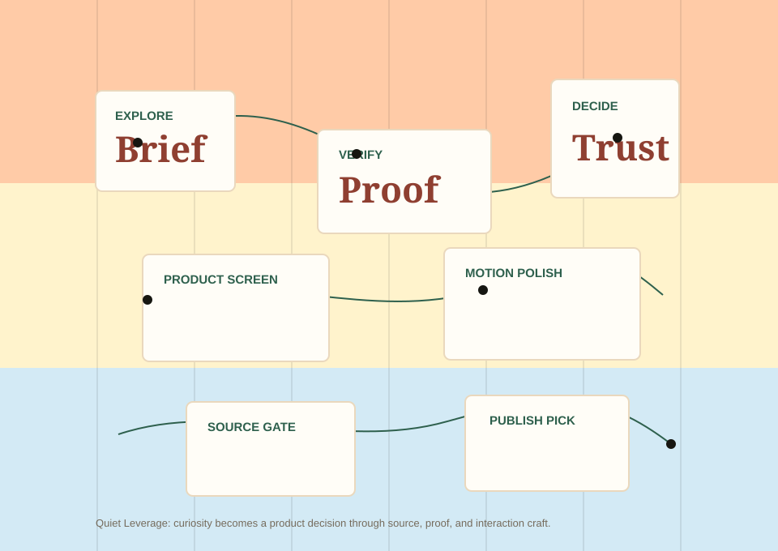

Review queue
Installed and field tested
Product Design Studio
A ground-up product-design build using `frontend-design`, `canvas-design`, and `emil-design-eng` together.
frontend-design
The Skill becomes a real product screen.
It starts with audience, job, tone, content, states, and one justified aesthetic risk before code.
Audience, job, tone, and technical constraints set before layout.
Review, empty, and published states are real, not placeholder posters.
Color, type, motion, and structure carry the product purpose.
canvas-design
The Skill turns product strategy into a visual philosophy.
The artifact uses minimal text and expresses the journey from curiosity to trusted pick through space, color, and structure.

emil-design-eng
The Skill is tested through invisible interaction details.
Small choices make the product feel faster: active press feedback, origin-aware popovers, tight easing, and reduced-motion support.
Press feedback
Buttons scale to 0.97 on active press and transition only transform for a crisp response.
Origin-aware popover
Use when
A Skill needs source, proof, and interaction quality before being recommended.
Tooltip behavior
Check stars before trust.
Tooltips are short, delayed only enough to prevent accidental activation, and do not block work.
| Before | After | Why |
|---|---|---|
| `transition: all` | `transition: transform 160ms` | Only animate cheap properties. |
| `scale(0)` | `scale(0.95) + opacity` | Nothing appears from nothing. |
| Slow hover motion | Short hover and active states | Repeated UI should feel immediate. |